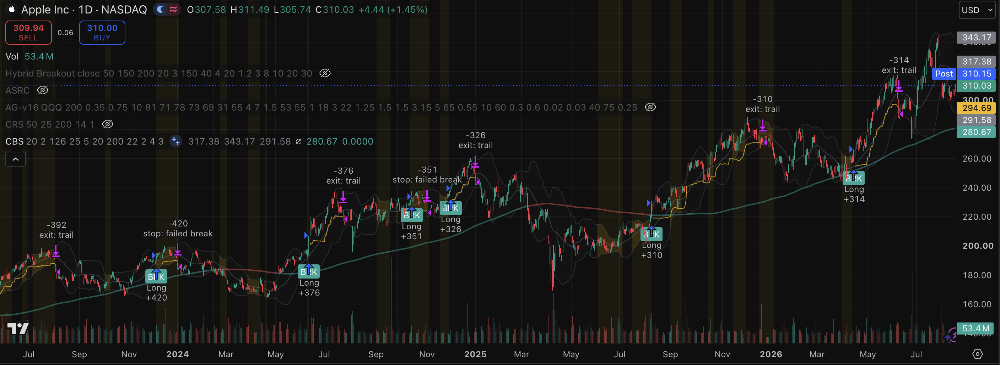
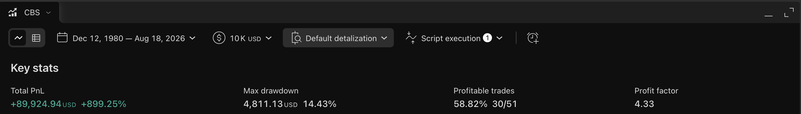
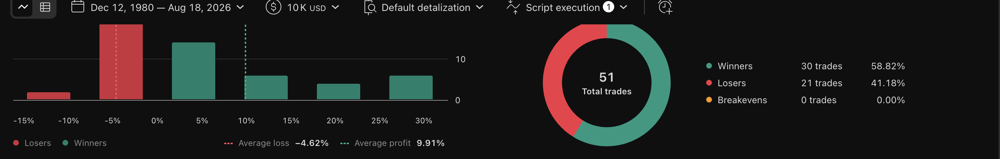

Volatility is cyclical: compression precedes expansion. The system waits for a statistically quiet base — Bollinger band width in the bottom quartile of its own trailing 6-month distribution — then buys the range break on above-average volume, in trend only, and rides the expansion on a wide chandelier trail. Expansion legs are long-tailed, so the exit is a trail, not a target.
The width filter uses a percentile rank, not an absolute threshold — it self-normalizes across symbols and volatility regimes, which is what makes the frozen-parameter cross-symbol tests below meaningful.
| Config | Net return | Profit factor | Win rate | Max DD | Trades | Largest loss |
|---|---|---|---|---|---|---|
| 4% risk (default) | +899% | 4.33 | 59% | 14.4% | 51 | −$3,927 |
| 2% risk | +374% | 4.85 | 60% | 7.3% | 45 | −$1,158 |
| full 40-yr history, 2% risk | +458% | 3.16 | 46% | 41.6%* | 89 | −$1,366 |
S&P 500 over 2005–2026: roughly +550% with a −57% drawdown in 2008. At the default risk setting the system beats that return with a quarter of the drawdown. Risk scales the whole profile nearly linearly — that is the point of fixed-fractional sizing. *The 40-year figure includes AAPL's pre-trend era (1980s–90s chop), where the peak-relative drawdown occurred at small equity; disclosed, not hidden.
| Symbol | Window | Net return | Profit factor | Win rate | Verdict |
|---|---|---|---|---|---|
| NVDA | 2005–2026 | +658% | 3.26 | 45% | edge confirmed |
| AAPL | 2005–2026 | +899% | 4.33 | 59% | primary |
| MSFT | 2005–2026 | +46% | 1.32 | 37% | carries, but thin |
The spread is the honest finding: the system feeds on names that actually produce post-squeeze expansion legs. High-beta trending stocks work; a low-vol grinding mega-cap barely clears costs. A production deployment would gate the universe on trend quality rather than trading everything.
| Test | Condition | Net return | Profit factor | Win rate | Max DD |
|---|---|---|---|---|---|
| Subperiod A | 2005 – 2015 | +164% | 3.35 | 64% | 14.4% |
| Subperiod B | 2015 – 2026 | +293% | 4.97 | 58% | 10.3% |
| Slippage stress | 5 ticks/side (5× modeled) | +256% | 4.77 | 63% | 10.7% |
width = (2·2σ20) / SMA20 · 100. Squeeze when ta.percentrank(width, 126) < 25. A breakout is valid within 5 bars of the last squeeze reading — compression must be recent, not ancient.
Close above the prior 20-day high (no same-bar self-reference), volume above its 20-day mean (participation, not drift), and close above the 200-day SMA (never fight the primary trend).
qty = equity · risk% / (2·ATR22), capped at 100% of equity. Volatile names automatically get smaller positions; loss per failed breakout is a constant fraction of the account.
Hard stop 2 ATR under entry (failed break = get out), chandelier trail 3 ATR under the high-water mark (winners run until structure actually gives way). No profit target by design.
basis = ta.sma(close, bbLen)
dev = ta.stdev(close, bbLen) * bbMult
bbW = (2.0 * dev) / basis * 100.0
wRank = ta.percentrank(bbW, rankLen)
sqzOn = wRank < sqzPct
sqzRecent = math.sum(sqzOn ? 1 : 0, sqzAge) > 0
brkLvl = ta.highest(high, brkLen)[1]
volOK = volume > ta.sma(volume, 20)
trendOK = close > ta.sma(close, smaLen)
buySig = not inPos and time >= startT and sqzRecent and close > brkLvl and volOK and trendOK
if buySig
stopDist = atr * stopAtr
qty = math.min(strategy.equity * riskPct / 100.0 / stopDist, strategy.equity / close)
strategy.entry("Long", strategy.long, qty=qty)
entryStop := close - stopDist
hwm := close
if inPos
hwm := math.max(hwm, close)
stopLvl = math.max(entryStop, hwm - atr * trailAtr)
if inPos and close < stopLvl
strategy.close("Long", comment=close <= entryStop ? "stop: failed break" : "exit: trail")